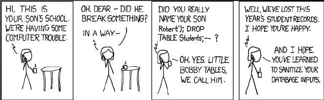

Your browser doesn't support the features required by impress.js, so you are presented with a simplified version of this presentation.
For the best experience please use the latest Chrome, Safari or Firefox browser.
Introduction to Module Development
Nico Penaredondo
and
Nathaniel Cailo
Module ?
A piece of code that adds or extends functionality on a drupal website
General modules : Nice Menus, Rules, Taxonomy
Product Catalog : Views, CCK, Tokens,ImageField
WYSIWYG HTML editor: : IMCE, FCKeditor
Forum : Voting API, Fivestar, Advanced Forum,Flag
Spam prevention : Mollom
Messages : Notifications, Messaging
Administration : Admin or Admin Menu,Features
SEO : Global Redirect, Google Analytics,Redirect, Metatag
Developers : Backup & Migrate, Devel
Types of Module
Core
Part of the official drupal package, Every Drupal websites have this core module
Contributed
Publicly available modules contributed by some drupal peeps.not specific to a particular website
Custom
Specific module to a particular website , not generally useful to the public
Why create a module ?
1. New functionality
2.Overrides existing functionality
(forms,nodes,users,search,theming and etc.)
3. Combination of the two
4. Almost every site needs a custom module
File Structure
»Module Folder(mymodule)
»».info file(mymodule.info)
»».module file(mymodule.module)
»».install file(mymodule.install)
»»Other files/folders
YOU Don't Need To Start From
core and contributed have powerful features that you can
integrate in your module
Displaying/processing form inputs
handling user accounts
creating custom listings of content

security issues ?
Drupal provides a lot of functions and resources that could help to secure your code
"It's the little details that are vital. Little things make big things happen. "
adasdasd